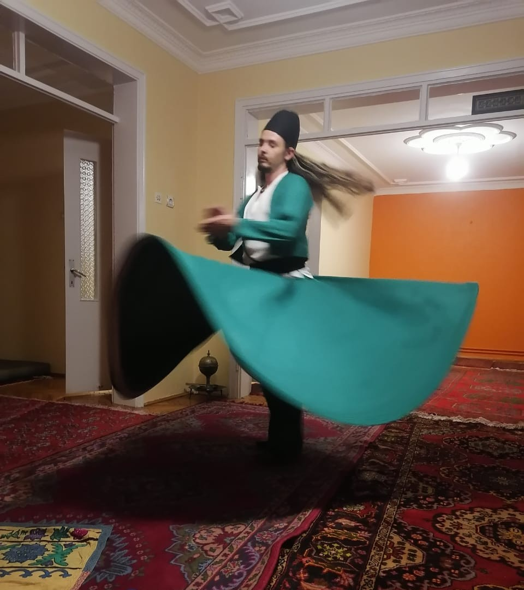

Photography by Reuben Parker
Sufi Shams Photography
Wandering Dervish. Mountaineer. Explorer. No matter where life has taken me, I have never followed the beaten path. The smell of the sage and petrichor after a hard desert rain. The overwhelming majesty of a sacred mountain. The call to prayer within the ancient walls of the Hagia Sophia. Each of these photos tells a piece of the story, and each is another step in my search for truth.
View the photographs
Meet Reuben
I'm Reuben Parker, whirling dervish, explorer, mountaineer and lover of life. I have pursued Sufism for half my life, since I was 15, and became a mountaineer in 2020. I was raised by a mother who grew up in national parks as the daughter of a ranger, and she instilled her love of the natural world in me since childhood. I see connection with nature to be another form of dhikr, the Sufi ceremony of remembrance, and as a way to look directly into the face of God.
I was born in Reno, Nevada, and now live in Minneapolis. I want to use my photography both as an art form and in my work as an emerging journalist. My eventual goal is to become a war correspondent.
Reuben, who also goes by his spiritual name Shamsaddin Ali Nur (or just "Shams") is a student of Pir Sahibzada Asim Maharvi Chishti, Khalifa Karima Vargas Bushnell and Pir Shabda Kahn, in both the Chishti and Jerrahi Helveti orders.
- 116
- photographs
- 2020-2025
- years photographed
Field Notes
Archive
Seen along the way
Showing all photographs
Have a story worth telling?
For editorial collaborations, prints, commissions, or licensing, write to reubennparker@gmail.com.